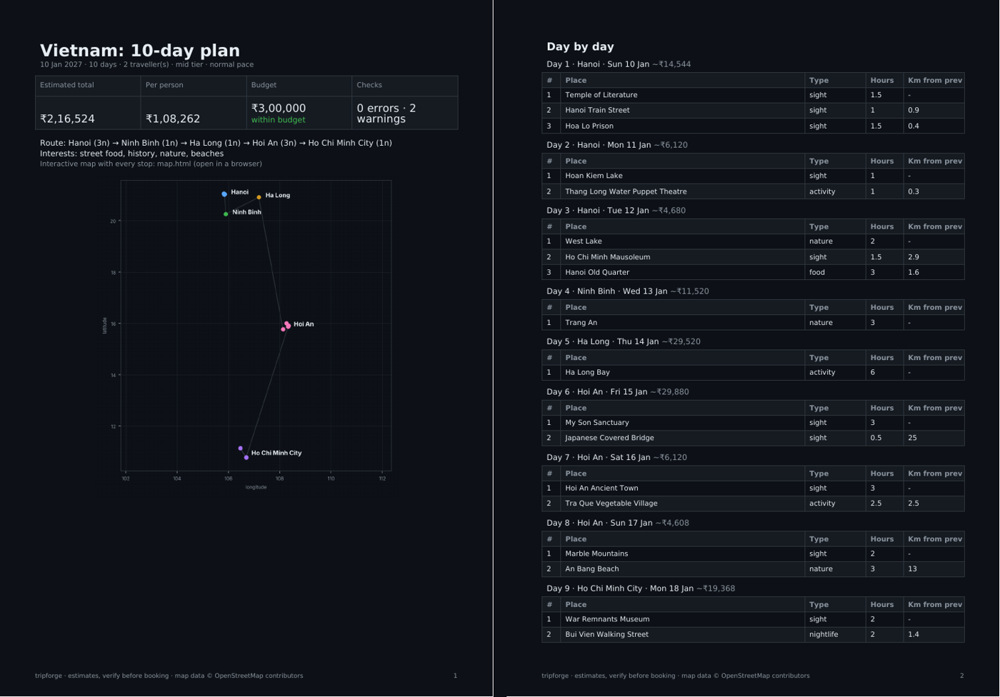

PROJECT · NOV 2026
tripforge: from rough trip notes to a costed itinerary
Every trip I plan starts as a messy note. tripforge treats that note like any other raw source: extract it into a typed record, enrich it, model it, check it, then publish it as a PDF and a map. One command, and every number shows where it came from.
$ make demo
brief: Vietnam, 10 days, 5 cities, 24 places (brief file)
seed: 24 coordinates
geocode: 24 found, 0 missing, 0 API calls
warn capacity: did not fit the pace: Hang Mua, Tam Coc, Sung Sot Cave, Ba Na Hills
warn long_leg: day 10: Ben Thanh Market (48.5 km)
total ≈ ₹216,524 (2 pax)
The pipeline
| Stage | What it does | Design choice |
|---|---|---|
| Extract | Local LLM reads the notes and returns a TripBrief: cities
with nights, places with city, type, hours, must-see flag. |
JSON schema + Pydantic validation; invalid output is rejected and never cached. Cached by notes hash + model. |
| Geocode | Each place is looked up on OpenStreetMap Nominatim. | 1 request per second with an identifying User-Agent; hits and misses cached, so a re-run makes zero calls. |
| Plan | Days per city from nights; arrival days get half the time. Places swept around the city centre so neighbours share a day, balanced to the pace, ordered nearest-neighbour. | Pure, deterministic function. Must-see places can push optional ones out; nightlife goes last. |
| Cost | Stay, food, local transport, transfers, entry fees, flights, buffer. | One YAML file per country, local currency, dated FX rate. Each line carries its basis; a missing price is flagged, never invented. |
| Check | Errors: over 30% of places not found, a must-see dropped. Warnings: overflow, long legs, budget, nights vs days, cost gaps. | A quality gate before publishing, like any production table. |
| Render | Dark PDF, Leaflet map with one layer per day, JSON. | Every run also lands in DuckDB: runs, itinerary_stops,
cost_lines. |
Why it's built like a data pipeline
- Idempotent. Same input, same output, no repeated LLM or API calls.
- Contracts at the edge. The LLM is a source system with no guarantees; the schema is the contract.
- Lineage on every number. The cost table in the PDF says how each rupee was computed.
- Tested. 20 tests in CI: planner rules, cache behaviour, rate limiting, offline mode, cost totals, check severities, rendering.
Limits
- Distances are straight-line, not road.
- Cost tiers are averages from 2026 travel-cost guides; real hotel and flight prices vary.
Next
- Road travel times from OSRM
- Opening hours from OpenStreetMap; skip places closed that weekday
- Weather by date to swap beach and museum days